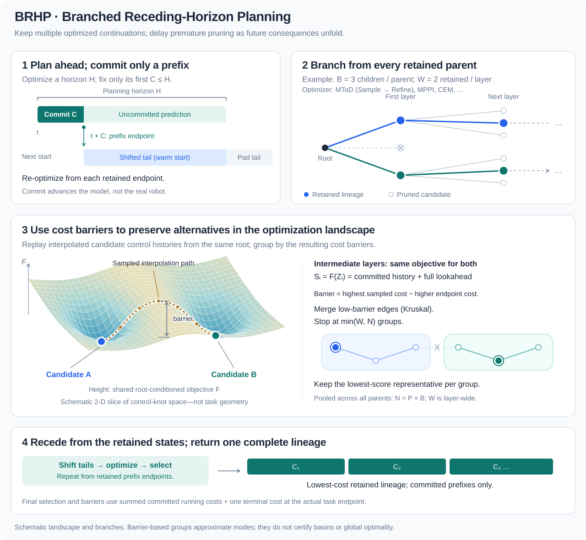
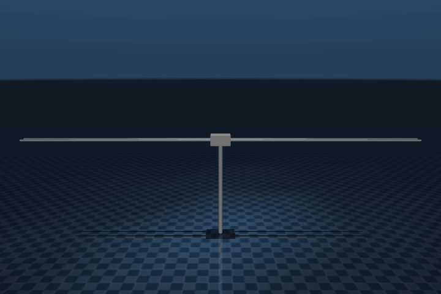
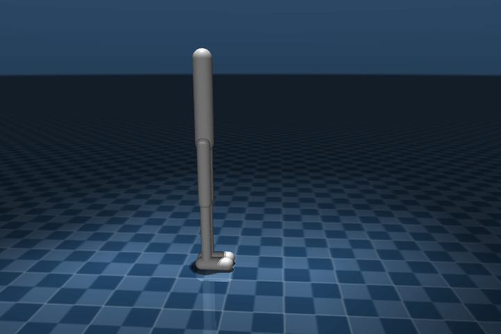
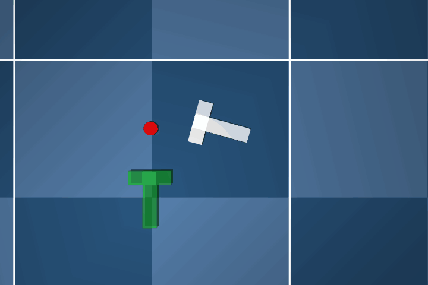

Sample, Then Refine:
Training-Free Diffusion for Offline Global Trajectory Planning
Motivation
Long-horizon trajectory optimization couples many control variables through nonlinear dynamics, making nonconvex objectives difficult to search. Short-horizon planning reduces this burden but can discard decisions whose benefits appear later. Branched Receding-Horizon Planning (BRHP) retains multiple optimized, low-cost continuations, groups candidates using sampled cost barriers, and reassesses their value as planning advances. Delaying premature pruning aims to preserve promising alternatives under a limited computational budget, without guaranteeing global optimality.



